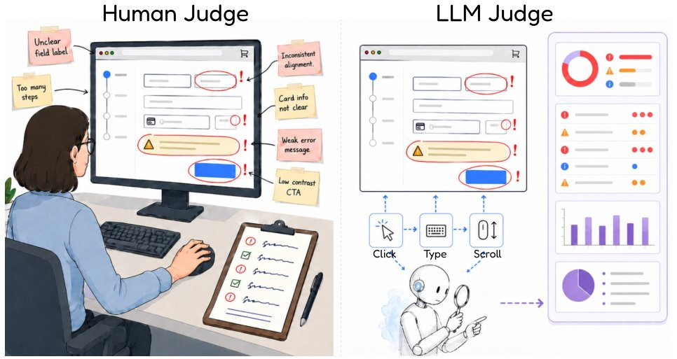
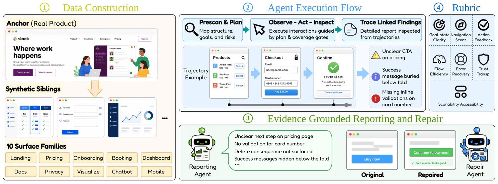
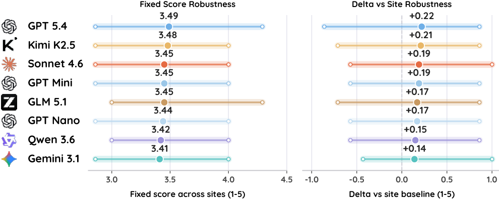
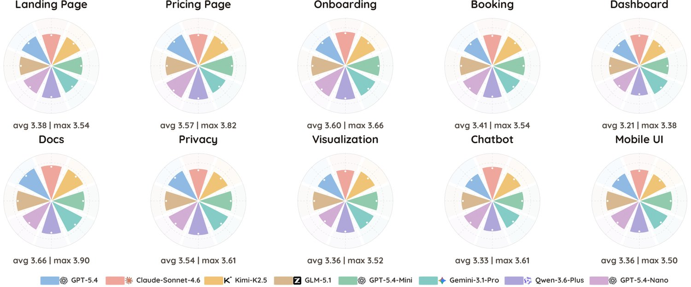
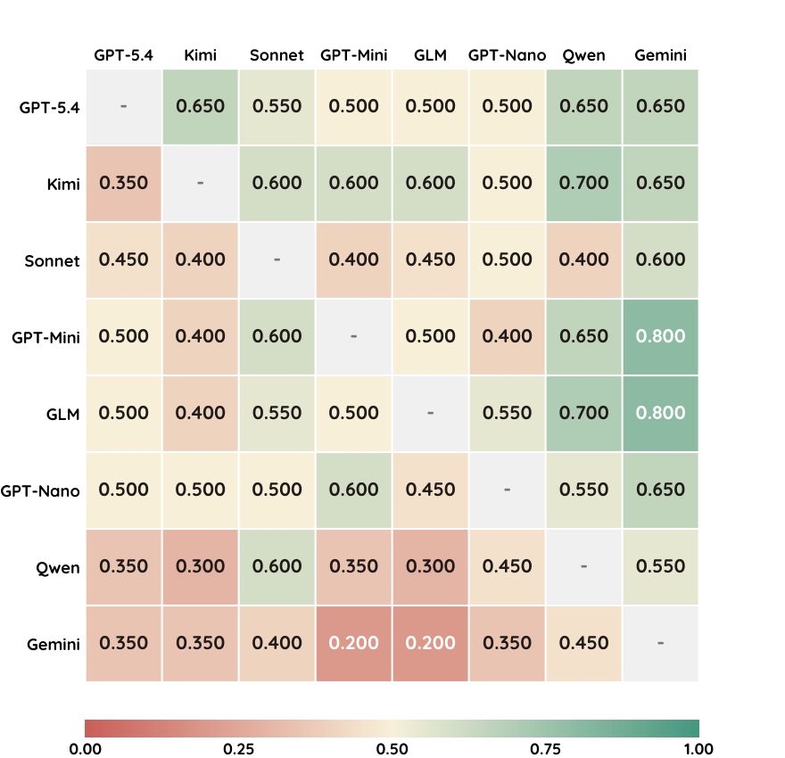
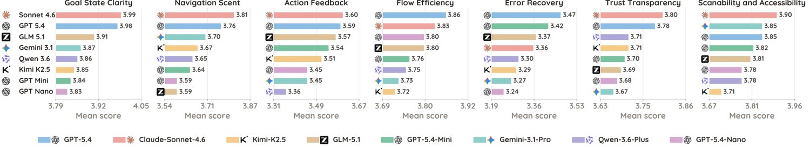
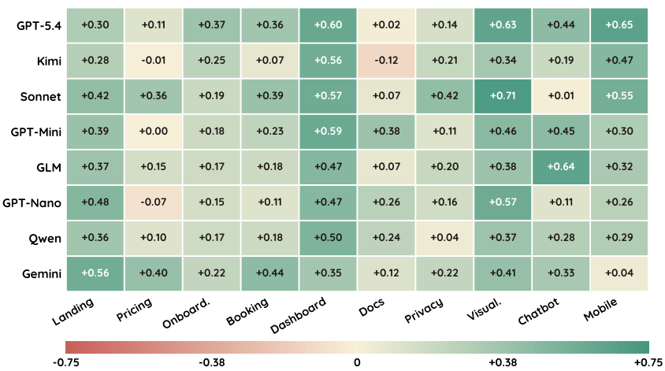
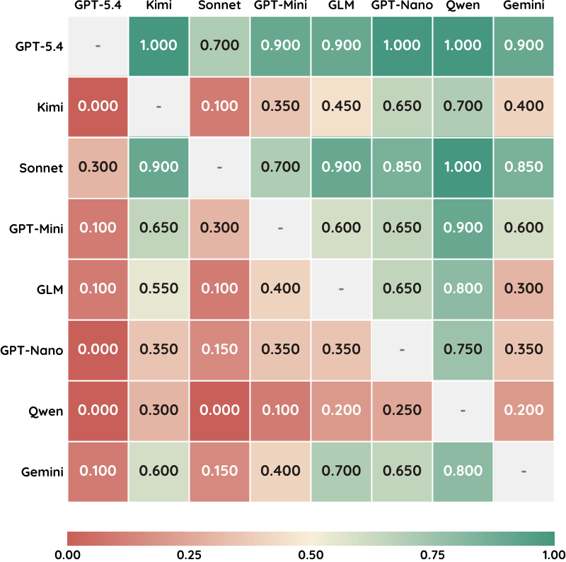
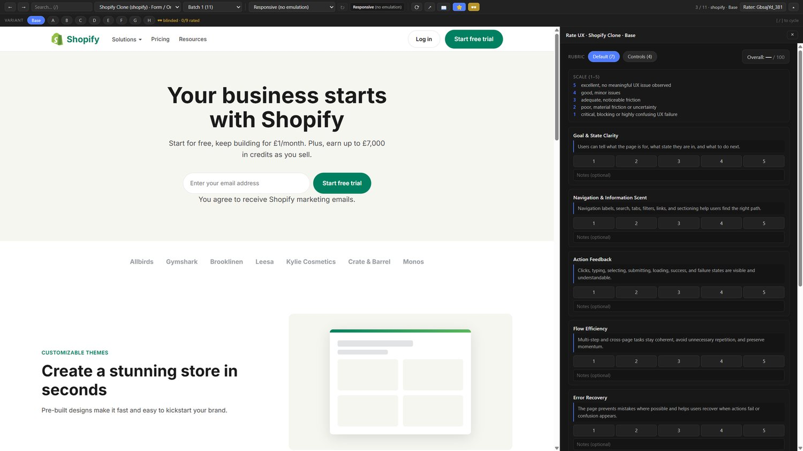
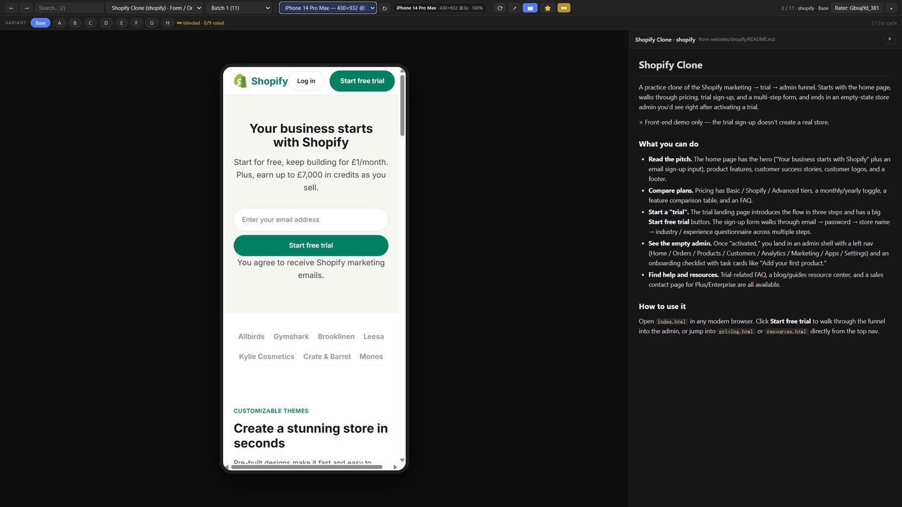

UXBench: Measuring the Actionability of LLM-Generated UX Critiques
UXBench: Measuring the Actionability of LLM-Generated UX Critiques
UXBench：衡量大语言模型生成 UX 评论的可操作性
* Corresponding author: xzhang33@nd.edu.
* 通讯作者：xzhang33@nd.edu。
代码项目主页
LLMs are increasingly used not only to generate code and interface mockups but also to review existing interfaces, diagnose usability problems, and propose repairs (Beltramelli, 2017; Si et al., 2025; Wu et al., 2024b; Duan et al., 2024). This shift makes UX judgment a natural target for model evaluation (Liu et al., 2023; Zheng et al., 2023). Recent work further extends this direction from static UI generation and critique to LLM-assisted usability testing, simulated user studies, and automated UX flaw detection (Lu et al., 2025b; Calvano et al., 2025; Gao et al., 2026). A useful judge should browse a page, recognize when users cannot infer the current state or next action, identify missing feedback or recovery paths, and communicate these issues in a form developers can act on (Parlakkılıç, 2021; Shneiderman, 1983). Yet it remains unclear whether current frontier models are reliable UX judges, or whether models that appear similar in general capability produce equally actionable critiques. As illustrated in Figure 1, we study UX judging as an interaction-grounded evaluation problem: both human and LLM judges must inspect the running interface, exercise controls, observe feedback, and turn the resulting evidence into actionable critique.
大语言模型（LLM）的用途正从生成代码与界面原型，扩展到审查既有界面、诊断易用性问题并提出修复方案（Beltramelli, 2017; Si et al., 2025; Wu et al., 2024b; Duan et al., 2024）。这一转向使 UX 判断成为模型评测的自然目标（Liu et al., 2023; Zheng et al., 2023）。近期工作进一步把该方向从静态 UI 生成与评论，拓展到 LLM 辅助的可用性测试、模拟用户研究与自动化 UX 缺陷检测（Lu et al., 2025b; Calvano et al., 2025; Gao et al., 2026）。一个有用的评判者应当浏览页面，识别用户在何时无法推断当前状态或下一步动作，找出缺失的反馈或恢复路径，并以开发者可据以行动的形式传达这些问题（Parlakkılıç, 2021; Shneiderman, 1983）。然而，当前的前沿模型是否是可靠的 UX 评判者，以及通用能力相近的模型能否产出同样可操作的评论，仍不清楚。如图 1 所示，我们把 UX 判断作为一个以交互为依据的评测问题来研究：人类与 LLM 评判者都必须检查运行中的界面、操作控件、观察反馈，并把由此得到的证据转化为可操作的评论。

图 1：以交互为依据的 UX 判断：与人类评审者一样，LLM 评判者应当检查运行中的界面、操作控件，并把评论建立在观察到的反馈之上，而非静态印象。
Evaluating this capability is difficult because web UX is not fully visible from a screenshot or a static DOM snapshot. Many usability failures are interactional: a disabled control may have no explanation, a form may silently reject input, a destructive action may hide its consequences, or a mobile layout may collapse into an unusable state. Recent studies of digital forms and responsive interfaces show that usability depends on input organization, validation behavior, editing flow, and cross-device layout behavior, rather than only on the first rendered view (Iftikhar et al., 2020; Breitmayer et al., 2024; Parlakkılıç, 2021). Accessibility work similarly treats labels, error identification, focus behavior, status messages, and dynamic content changes as properties that must remain perceivable during interaction (World Wide Web Consortium (W3C), 2024; Mehralian et al., 2025). A judge that only inspects the first rendered view can therefore produce fluent but weakly grounded criticism. Reliable UX judging requires evidence collection: the model must exercise controls, observe state transitions, test error and recovery paths, and tie each finding to concrete behavior in the running interface.
评估这一能力很困难，因为 Web UX 无法从一张截图或一份静态 DOM 快照中完全看清。许多易用性失效是交互性的：被禁用的控件可能没有任何说明，表单可能静默拒绝输入，破坏性操作可能隐藏其后果，移动端布局也可能坍缩为不可用状态。近期关于数字表单与响应式界面的研究表明，易用性取决于输入组织、校验行为、编辑流程与跨设备布局行为，而不仅仅是首次渲染出的视图（Iftikhar et al., 2020; Breitmayer et al., 2024; Parlakkılıç, 2021）。可访问性工作同样把标签、错误识别、焦点行为、状态消息与动态内容变化视为在交互过程中必须保持可感知的属性（World Wide Web Consortium (W3C), 2024; Mehralian et al., 2025）。因此，只检查首次渲染视图的评判者可能产出流畅却依据薄弱的批评。可靠的 UX 判断需要证据收集：模型必须操作控件、观察状态转移、测试错误与恢复路径，并把每一条发现绑定到运行界面中的具体行为。
Existing benchmarks only partially cover this setting. Web and GUI agent benchmarks typically measure whether an agent can complete user tasks in a browser or operating-system environment (Deng et al., 2023; Zhou et al., 2024; Koh et al., 2024; He et al., 2024; Xie et al., 2024; Cheng et al., 2024), while UI generation benchmarks evaluate whether models can synthesize interfaces from textual or visual specifications (Beltramelli, 2017; Si et al., 2025; Yun et al., 2024). Screenshot-level preference and design-evaluation setups can compare visual appeal or layout quality, or region-level design critiques (Wu et al., 2024a; Duan et al., 2024), but they do not isolate whether a model can produce interaction-grounded UX reports whose recommendations lead to better interfaces. As a result, the community lacks a controlled benchmark for measuring the actionability and reliability of LLM-generated UX critique across the heterogeneous product surfaces that users encounter in practice.
现有基准只部分覆盖这一设定。Web 与 GUI 智能体基准通常衡量智能体能否在浏览器或操作系统环境中完成用户任务（Deng et al., 2023; Zhou et al., 2024; Koh et al., 2024; He et al., 2024; Xie et al., 2024; Cheng et al., 2024），而 UI 生成基准评估模型能否从文本或视觉规格合成界面（Beltramelli, 2017; Si et al., 2025; Yun et al., 2024）。截图层面的偏好与设计评测设定可以比较视觉吸引力或布局质量，或给出区域级设计评论（Wu et al., 2024a; Duan et al., 2024），但它们无法单独检验模型能否产出以交互为依据、且其建议确实带来更好界面的 UX 报告。因此，学界缺少一个受控基准，用以衡量 LLM 生成的 UX 评论在用户实际接触的异质产品界面上的可操作性与可靠性。
We introduce UXBench, a benchmark for evaluating LLMs as interaction-grounded UX judges. UXBench consists of local-first runnable web fixtures implemented as static HTML/CSS/JavaScript bundles, removing live-site drift from A/B tests, personalization, backend failures, and third-party outages. The benchmark spans ten surface families—from landing pages and checkout flows to dashboards, chatbot interfaces, and mobile micro-UIs. Within each family, UXBench pairs real-product anchors with independently authored synthetic siblings: anchors preserve recognizable interaction patterns, while siblings vary branding, text, layout, and visual identity so that models must judge the interface in front of them rather than recall memorized impressions of familiar products.
我们提出 UXBench，一个用于把 LLM 作为以交互为依据的 UX 评判者来评测的基准。UXBench 由本地优先的可运行 Web 固定样例构成，以静态 HTML/CSS/JavaScript 包实现，从而排除在线站点的漂移——A/B 测试、个性化、后端故障与第三方服务中断。该基准覆盖十个界面族——从落地页、结账流程到仪表盘、聊天机器人界面与移动端微型 UI。在每个族内，UXBench 把真实产品锚点与独立编写的合成兄弟样例配对：锚点保留可识别的交互模式，兄弟样例则在品牌、文案、布局与视觉识别上做出变化，迫使模型评判眼前的界面，而不是回忆对熟悉产品的既有印象。
Each UXBench run evaluates a judge model through a coverage-gated browser trajectory. The model prescans the fixture, forms an exploration plan, then repeatedly observes the rendered page, takes user-like actions, and inspects the resulting feedback. A coverage gate prevents premature termination: if the model attempts to stop before collecting sufficient evidence, the environment returns the unmet conditions and resumes exploration. After the trajectory, the model produces an evidence-grounded UX report over seven rubric dimensions. To measure whether the critique is actionable rather than merely plausible, UXBench passes the report to a fixed repair agent that edits the fixture while preserving the original product intent, brand identity, and interaction semantics. The repaired interface is then scored under a fixed evaluator, turning report actionability into a comparable signal.
每一次 UXBench 运行都通过一条受覆盖率门控的浏览器轨迹来评测一个评判模型。模型先预扫描固定样例，形成探索计划，然后反复观察渲染出的页面、采取类用户动作、并检查由此产生的反馈。覆盖率门控防止过早终止：若模型在收集到充分证据之前试图停止，环境会返回未满足的条件并继续探索。轨迹结束后，模型产出一份覆盖七个评分维度、以证据为依据的 UX 报告。为衡量评论是否可操作（而不仅仅看似合理），UXBench 把报告交给一个固定的修复智能体，由它在保持原有产品意图、品牌识别与交互语义的前提下编辑固定样例。修复后的界面再由一个固定的评测器打分，从而把报告的可操作性转化为可比较的信号。
We evaluate eight frontier models with two complementary protocols: an automated sweep and a blind human validation study. Across both, UXBench reveals that UX judging is neither saturated nor one-dimensional: repair lift varies meaningfully across models, rubric-level signatures diverge, fixture-level reliability differs even among similarly ranked models, and the leading model changes across product-surface categories.
我们用两种互补协议评测了八个前沿模型：一次自动化扫描与一项盲态人工验证研究。两者共同表明，UX 判断既未饱和，也不是一维的：不同模型的修复增益差异显著，评分维度层面的特征各不相同，固定样例层面的可靠性存在差异，且领先模型随产品界面类别而更替。
Our contributions are threefold:
我们的贡献有三个方面：
We formulate LLM-based UX judging as an interaction-grounded, report-conditioned repair evaluation problem, where the quality of a judge is measured by whether its evidence-backed critique supports downstream interface improvement.
我们把基于 LLM 的 UX 判断形式化为一个以交互为依据、以报告为条件的修复评测问题，其中评判者的质量由「其有证据支撑的评论能否支撑下游界面改进」来衡量。
We introduce UXBench, a local-first suite of runnable web fixtures spanning ten product-surface families, with real anchors, synthetic siblings, coverage-gated browser exploration, and evidence-grounded UX reporting.
我们提出 UXBench——一套本地优先的可运行 Web 固定样例，覆盖十个产品界面族，配有真实锚点、合成兄弟样例、受覆盖率门控的浏览器探索，以及以证据为依据的 UX 报告。
We evaluate eight frontier models under automated and human protocols, showing that UX judge models differ in report actionability, rubric-level strengths, fixture-level reliability, and surface-conditioned competence.
我们在自动化与人工两种协议下评测了八个前沿模型，表明 UX 评判模型在报告可操作性、评分维度层面的强项、固定样例层面的可靠性，以及受界面条件制约的能力上各不相同。
Recent web and GUI agent benchmarks evaluate whether language and multimodal agents can perceive interface state, act in interactive environments, and complete user-specified tasks. Early controlled platforms such as World of Bits and MiniWoB/MiniWoB++ established web interaction as a measurable learning problem, while later benchmarks extend the setting to realistic websites, visual web environments, enterprise software, desktop operating systems, and mobile devices. Collectively, Mind2Web, WebArena, VisualWebArena, WebVoyager, SeeClick, OSWorld, WorkArena, BrowserGym, WebLINX, Android in the Wild, AndroidWorld, and GUIOdyssey measure abilities such as instruction following, multi-step navigation, visual grounding, desktop control, conversational web interaction, and cross-app mobile operation (Shi et al., 2017; Liu et al., 2018a; Deng et al., 2023; Zhou et al., 2024; Koh et al., 2024; He et al., 2024; Cheng et al., 2024; Xie et al., 2024; Drouin et al., 2024; Chezelles et al., 2025; Lù et al., 2024; Rawles et al., 2025; Rawles et al., 2023; Lu et al., 2025a). These benchmarks make interaction a central evaluation object, but their success criteria are usually task completion, final-state correctness, or action accuracy. In contrast, UXBench studies a different capability: the model is not asked to complete a user task, but to inspect a running interface, gather evidence about usability failures, and produce findings that can support downstream interface repair.
近期的 Web 与 GUI 智能体基准评估语言与多模态智能体能否感知界面状态、在交互式环境中行动并完成用户指定任务。World of Bits 与 MiniWoB/MiniWoB++ 等早期受控平台把 Web 交互确立为一个可测量的学习问题，此后的基准把该设定扩展到真实网站、视觉 Web 环境、企业软件、桌面操作系统与移动设备。总体而言，Mind2Web、WebArena、VisualWebArena、WebVoyager、SeeClick、OSWorld、WorkArena、BrowserGym、WebLINX、Android in the Wild、AndroidWorld 与 GUIOdyssey 衡量的是指令跟随、多步导航、视觉定位、桌面控制、对话式 Web 交互与跨应用移动操作等能力（Shi et al., 2017; Liu et al., 2018a; Deng et al., 2023; Zhou et al., 2024; Koh et al., 2024; He et al., 2024; Cheng et al., 2024; Xie et al., 2024; Drouin et al., 2024; Chezelles et al., 2025; Lù et al., 2024; Rawles et al., 2025; Rawles et al., 2023; Lu et al., 2025a）。这些基准把交互置于评测中心，但其成功标准通常是任务完成度、最终状态正确性或动作准确率。相比之下，UXBench 研究的是另一种能力：模型不被要求完成某个用户任务，而是要检查运行中的界面、收集关于易用性失效的证据，并产出能够支撑下游界面修复的发现。
Another line of work studies interface understanding, UI generation, and automated design evaluation. Large-scale UI datasets and design-search systems such as Rico, learned mobile design semantics, WebUI, Gallery D.C., and VINS support component understanding, semantic annotation, retrieval, visual search, and data-driven design assistance (Deka et al., 2017; Liu et al., 2018b; Wu et al., 2023; Chen et al., 2019; Bunian et al., 2021). UI generation methods and benchmarks, including pix2code, Design2Code, Web2Code, UICoder, and DCGen, further evaluate whether models can synthesize interface code from screenshots, webpages, text specifications, or multimodal prompts (Beltramelli, 2017; Si et al., 2025; Yun et al., 2024; Wu et al., 2024b; Wan et al., 2025). Closer to evaluation, UIClip and UICrit assess visual design quality, screenshot–description alignment, or region-level design critiques (Wu et al., 2024a; Duan et al., 2024). This work shows that models can reason over UI structure, appearance, and code, but the evaluation target is often the generated artifact or a static visual/design judgment. In contrast, UXBench evaluates critiques produced after browser interaction: missing feedback, silent validation, hidden consequences, weak recovery paths, and other UX failures are treated as interactional evidence that should be observed, reported, and tested through report-conditioned repair.
另一条研究线关注界面理解、UI 生成与自动化设计评测。Rico、习得的移动设计语义、WebUI、Gallery D.C. 与 VINS 等大规模 UI 数据集与设计检索系统，支撑组件理解、语义标注、检索、视觉搜索与数据驱动的设计辅助（Deka et al., 2017; Liu et al., 2018b; Wu et al., 2023; Chen et al., 2019; Bunian et al., 2021）。pix2code、Design2Code、Web2Code、UICoder 与 DCGen 等 UI 生成方法与基准，进一步评估模型能否从截图、网页、文本规格或多模态提示合成界面代码（Beltramelli, 2017; Si et al., 2025; Yun et al., 2024; Wu et al., 2024b; Wan et al., 2025）。更接近评测的是 UIClip 与 UICrit，它们评估视觉设计质量、截图与描述的对齐，或区域级设计评论（Wu et al., 2024a; Duan et al., 2024）。这些工作表明模型能够就 UI 结构、外观与代码进行推理，但其评测对象往往是生成的产物或静态的视觉／设计判断。相比之下，UXBench 评测的是浏览器交互之后产出的评论：缺失的反馈、静默校验、隐藏的后果、薄弱的恢复路径以及其他 UX 失效，都被视为应当被观察、报告，并通过以报告为条件的修复加以检验的交互性证据。
Recent work has begun to use LLMs and multimodal agents for usability testing, heuristic evaluation, accessibility testing, and simulated user studies. Earlier automated-usability-evaluation research surveyed how software tools can support usability inspection, testing, inquiry, analytical modeling, and simulation, while also emphasizing the difficulty of automating context-sensitive interface judgment (Ivory and Hearst, 2001). Newer LLM-based systems revisit this problem with stronger language and UI-understanding capabilities: UXAgent simulates usability testing with LLM agents, AXNav replays natural-language accessibility tests through assistive-technology navigation, and recent studies explore LLM-based UX testing, heuristic evaluation, and comparison with human experts (Lu et al., 2025b; Taeb et al., 2024; Hsueh et al., 2024; Guerino et al., 2025). These works are closest to UXBench because they treat usability evaluation as an interactive or expert-like process rather than a purely visual judgment. UXBench differs mainly in its evaluation framing: instead of using LLMs as open-ended testing assistants, it fixes the fixtures, exploration protocol, repair agent, and scorer to compare judge models by whether their evidence-grounded reports produce measurable interface improvement.
近期工作开始把 LLM 与多模态智能体用于可用性测试、启发式评估、可访问性测试与模拟用户研究。更早的自动化可用性评测研究综述了软件工具如何支撑可用性检查、测试、询问、分析建模与仿真，同时强调自动化语境敏感界面判断的困难（Ivory and Hearst, 2001）。更新的基于 LLM 的系统凭借更强的语言与 UI 理解能力重新审视这一问题：UXAgent 用 LLM 智能体模拟可用性测试，AXNav 通过辅助技术导航重放自然语言可访问性测试，近期研究还探索了基于 LLM 的 UX 测试、启发式评估以及与人类专家的对比（Lu et al., 2025b; Taeb et al., 2024; Hsueh et al., 2024; Guerino et al., 2025）。这些工作与 UXBench 最接近，因为它们把可用性评测视为一个交互式或类专家的过程，而非纯粹的视觉判断。UXBench 的主要差异在于评测框架：它不把 LLM 当作开放式测试助手，而是固定样例、探索协议、修复智能体与打分器，以「其有证据支撑的报告能否带来可测量的界面改进」来比较各评判模型。
Figure 2provides an overview of the UXBench construction and evaluation pipeline. The benchmark is built around four connected components: local-first fixture construction, coverage-gated browser exploration, evidence-grounded UX reporting, and report-conditioned repair.
图 2 给出了 UXBench 构建与评测流水线的概览。该基准围绕四个相互衔接的组件构建：本地优先的固定样例构建、受覆盖率门控的浏览器探索、以证据为依据的 UX 报告，以及以报告为条件的修复。
Local-First Fixtures. UXBench consists of local-first web fixtures implemented as static HTML/CSS/JavaScript bundles, each servable from a local file server without backend dependencies. Pinning the interface in this way removes the major sources of drift that confound live-site evaluation (e.g., A/B tests, personalization, and third-party outages), so that any score difference between models reflects the models themselves rather than the environment in which they were evaluated.
本地优先的固定样例。UXBench 由本地优先的 Web 固定样例构成，以静态 HTML/CSS/JavaScript 包实现，每个都可由本地文件服务器提供，无需后端依赖。以这种方式把界面固定下来，消除了困扰在线站点评测的主要漂移来源（例如 A/B 测试、个性化与第三方服务中断），因此模型之间的任何分数差异都反映模型本身，而非其被评测时所处的环境。
Surface Categories. Rather than building one or two deep applications, UXBench prioritizes breadth across the kinds of product surfaces web users routinely encounter (e.g., marketing, transactional, operational, and mobile surfaces; the full taxonomy is given in Table 3). Different surfaces stress qualitatively different UX competences: a judge that handles one family well (e.g., a static marketing page) may still misread another (e.g., a transactional flow whose failures only emerge mid-interaction).
界面类别。UXBench 没有构建一两个深度应用，而是优先覆盖 Web 用户日常接触的各类产品界面（例如营销型、交易型、运营型与移动端界面；完整分类见表 3）。不同界面考验的是性质不同的 UX 能力：能很好处理某一族（例如静态营销页）的评判者，仍可能误读另一族（例如其失效只在交互中途才显现的交易流程）。
Anchors and Synthetic Siblings. Within each surface category, UXBench pairs one or more real-product anchors with several independently authored synthetic siblings (Table 3). The anchor grounds the category in a recognizable interaction pattern (e.g., the structure of a familiar checkout or dashboard), while the siblings preserve that interaction model but vary the surface (e.g., re-skinning the visual identity and rewriting the textual content). The anchor supplies external validity, while the siblings test whether the judge evaluates the interface currently in front of it rather than memorized impressions of well-known products. More details are provided in Appendix B.
锚点与合成兄弟样例。在每个界面类别内，UXBench 把一个或多个真实产品锚点与若干独立编写的合成兄弟样例配对（表 3）。锚点以可识别的交互模式（例如一个熟悉的结账或仪表盘的结构）为该类别提供依据，兄弟样例则保留这一交互模型，而在表层做出变化（例如重新设计视觉识别、改写文本内容）。锚点提供外部效度，兄弟样例则检验评判者是在评估眼前的界面，还是在依赖对知名产品的记忆印象。更多细节见附录 B。

图 2：UXBench 概览。本地优先的真实锚点与合成兄弟样例通过受覆盖率门控的浏览器探索被评测。与轨迹关联的发现被转化为以证据为依据的 UX 报告，随后用于以报告为条件的修复，并用同一套七维 UX 评分量规打分。
Overview. A single UXBench run proceeds in four stages: the judge agent executes a lightweight prescan and produces an exploration plan; it enters a closed-loop observe–act trajectory in a real browser; on termination it emits an evidence-grounded UX report; and the report is consumed by a fixed code-editing agent to perform localized repair on the fixture source.
概览。一次 UXBench 运行分四个阶段推进： 评判智能体执行一次轻量预扫描并产出探索计划； 它在真实浏览器中进入一个观察—行动的闭环轨迹； 终止时它产出一份以证据为依据的 UX 报告； 该报告被一个固定的代码编辑智能体消费，对固定样例源码执行局部修复。
Prescan and Planning. Each run begins with a prescan that compiles a brief structural summary of the site (e.g., visible pages and salient controls) and converts it into an explicit exploration plan stating what the agent intends to verify and when it may stop. The plan is adaptive, not scripted: the agent re-routes when feedback is ambiguous (e.g., switching to a recovery path or revisiting under a mobile viewport) rather than following a fixed click sequence.
预扫描与规划。每次运行以预扫描开始，它编译出站点的一份简短结构摘要（例如可见页面与显著控件），并将其转换为一份明确的探索计划，说明智能体打算验证什么、以及何时可以停止。该计划是自适应的，而非脚本化的：当反馈含糊时，智能体会改变路线（例如切换到恢复路径，或在移动视口下重新访问），而不是遵循固定的点击序列。
Browser-Based Trajectory. Following the prescan and plan, the agent evaluates the runnable interface by repeatedly observing the current page state, taking a user-like action, and inspecting the resulting feedback. Interactive evaluation is necessary because many UX failures only emerge during interaction (e.g., silent form validation or a disabled control with no visible response). Formally, at step the agent receives an observation of the current page (combining textual, structural, and visual cues, e.g., rendered text, a screenshot, and any runtime warnings) and selects an action (e.g., a click, a text entry, or a viewport switch), yielding an interaction trajectory
基于浏览器的轨迹。预扫描与规划之后，智能体通过反复观察当前页面状态、采取类用户动作、检查由此产生的反馈来评估可运行界面。交互式评估是必要的，因为许多 UX 失效只在交互过程中才显现（例如静默的表单校验，或点击被禁用的控件却没有任何可见响应）。形式化地，在第 步，智能体接收当前页面的一个观察 （融合文本、结构与视觉线索，例如渲染文本、截图以及任何运行时警告），并选择一个动作 （例如点击、输入文本或切换视口），由此得到一条交互轨迹
UXBench treats this trajectory as the primary evidence source: reported issues are expected to correspond to concrete interaction events (e.g., a state transition that occurred without feedback) rather than to unsupported visual impressions.
UXBench 把这条轨迹视为主要证据来源：所报告的问题应当对应具体的交互事件（例如一次没有任何反馈的状态转移），而非无依据的视觉印象。
算法 1 受覆盖率门控的探索
After exploration, UXBench produces a final UX report using the accumulated trajectory, coverage summary, and final browser state. Each metric-level judgment must be supported by concrete trace evidence, so a finding is considered valid only when it can be linked to an observed interaction event. This makes the report auditable rather than merely rhetorical. To further test whether the critique is actionable, UXBench performs report-conditioned repair. Given the ranked findings and the fixture source code, we invoke Claude Code as an independent code-editing agent with a restricted file-editing toolset. The original interface, brand identity, and interaction intent are specified as invariants, ensuring that any improvement in repaired UX quality reflects the actionability of the generated report rather than an unconstrained redesign.
探索结束后，UXBench 利用累积的轨迹、覆盖率摘要与最终浏览器状态生成一份最终的 UX 报告。每个指标层面的判断都必须由具体的轨迹证据支撑，因此一条发现只有在能够关联到某个被观察到的交互事件时才被视为有效。这使报告可被审计，而不只是修辞。为进一步检验评论是否可操作，UXBench 执行以报告为条件的修复。给定排序后的发现与固定样例源码，我们调用 Claude Code 作为独立的代码编辑智能体，并为其配备受限的文件编辑工具集。原始界面、品牌识别与交互意图被指定为不变量，确保修复后 UX 质量的任何提升都反映所生成报告的可操作性，而非一次不受约束的重新设计。
The trajectory loop terminates only when the collected evidence is substantive enough to back the report. UXBench enforces this with a coverage gate: at each step, the system recomputes a compact coverage state that operationalizes evidential sufficiency over the interaction trace and the current plan (e.g., whether the agent has actually exercised the salient controls of the page, not merely visited it). If the judge proposes to stop before this threshold is reached, the environment rejects the finish decision and returns the unmet conditions, pushing the agent back toward under-explored regions. The gate therefore constrains only evidence collection, not the downstream report or repair stage, and its role is to ensure that final UX findings are grounded in observed interaction consequences rather than in superficial browsing. Algorithm 1 summarizes this loop; detailed algorithm is provided in Appendix A.
轨迹循环只有在收集到的证据足以支撑报告时才终止。UXBench 用一个覆盖率门控来强制执行这一点：每一步，系统都会重新计算一个紧凑的覆盖率状态，把「证据充分性」落实到交互轨迹与当前计划之上（例如智能体是否真正操作过页面的显著控件，而不只是访问过该页面）。若评判者在这一阈值达成之前提出停止，环境会驳回该结束决定并返回未满足的条件，把智能体推回未充分探索的区域。因此该门控只约束证据收集，而不约束下游的报告或修复阶段；它的作用是确保最终的 UX 发现建立在被观察到的交互后果之上，而非浮光掠影的浏览。算法 1 概述了这一循环；详细算法见附录 A。
| Overall | Per-dimension () | |||||||||
|---|---|---|---|---|---|---|---|---|---|---|
| Model | Base. | Repaired | Goal | Nav | Fdbk | Flow | Err | Trust | Scan | |
| GPT 5.4 | 3.27 | 3.49 | +0.22 | +0.13 | +0.15 | +0.36 | +0.05 | +0.36 | +0.21 | +0.26 |
| Kimi k2.5 | 3.27 | 3.48 | +0.21 | +0.12 | +0.17 | +0.44 | +0.05 | +0.12 | +0.27 | +0.29 |
| Sonnet 4.6 | 3.27 | 3.45 | +0.19 | +0.15 | +0.05 | +0.35 | +0.03 | +0.28 | +0.15 | +0.35 |
| GPT Mini | 3.27 | 3.45 | +0.19 | +0.13 | +0.13 | +0.38 | +0.05 | +0.18 | +0.13 | +0.33 |
| GLM 5.1 | 3.27 | 3.45 | +0.17 | +0.17 | +0.32 | +0.05 | +0.20 | +0.20 | +0.32 | |
| GPT Nano | 3.27 | 3.44 | +0.17 | +0.07 | +0.05 | +0.34 | +0.10 | +0.20 | +0.05 | +0.37 |
| Qwen 3.6 | 3.27 | 3.42 | +0.15 | +0.02 | +0.07 | +0.24 | +0.12 | +0.07 | +0.12 | +0.39 |
| Gemini 3.1 | 3.27 | 3.41 | +0.14 | +0.08 | +0.03 | +0.24 | +0.08 | +0.11 | +0.11 | +0.34 |
表 1：八个受评模型在整体与逐维度上的修复增益，按 排序。加粗表示该列最大值。为简洁起见，表中把 Claude-Sonnet-4.6 简写为 Sonnet 4.6，GPT-5.4-Mini 简写为 GPT Mini，GPT-5.4-Nano 简写为 GPT Nano，Qwen-3.6-Plus 简写为 Qwen 3.6，Gemini-3.1-Pro 简写为 Gemini 3.1。
UXBench evaluates judge models using two complementary protocols: an automated LLM-as-judge sweep and a blind human validation study.
UXBench 用两种互补协议评测评判模型：一次自动化的 LLM 即评判者扫描，以及一项盲态人工验证研究。
Automated sweep. Each evaluated model drives the same coverage-gated exploration agent over the runnable fixtures in Table 3 under a fixed exploration budget, producing one complete evaluation run per model–fixture pair. Each run is converted into an evidence-grounded UX report and scored by a fixed scoring judge, GPT-5.4-Mini. The fixed scoring judge is blinded to the identity of the judge model that produced each repair report.
自动化扫描。每个受评模型在固定的探索预算下，驱动同一个受覆盖率门控的探索智能体跑完表 3 中的可运行固定样例，为每个模型—固定样例对产生一次完整的评测运行。每次运行被转换为一份以证据为依据的 UX 报告，并由固定的打分评判者 GPT-5.4-Mini 打分。该固定打分评判者对产出各份修复报告的评判模型身份保密。
图 3：UXBench 中真实锚点与合成兄弟样例的结构特征刻画。A11y 表示可访问性，IA 表示信息架构。
Human evaluation. To validate whether automated repair-lift rankings align with human UX judgment, we conduct a blind expert review of the repaired candidate interfaces. We recruit six participants with UX or front-end design experience. For each fixture, reviewers inspect the rendered repaired webpage produced from an anonymized judge report and rate the interface on the same seven rubric dimensions, with model identities, presentation order, and automated scores hidden throughout. Reviewers may revisit reports within the same group before submission, allowing local recalibration across candidates.
人工评测。为验证自动化的修复增益排序是否与人类 UX 判断一致，我们对修复后的候选界面开展了一次盲态专家评审。我们招募了六名具有 UX 或前端设计经验的参与者。对于每个固定样例，评审者检查由匿名评判报告生成的、渲染后的修复网页，并按同样的七个评分维度为该界面打分；模型身份、呈现顺序与自动化分数在整个过程中始终隐藏。评审者可在提交前重访同一组内的报告，从而在各候选之间做局部重新校准。
UXBench scores each fixture along the seven default dimensions in Table 5. The rubric reuses constructs measured by the standard family of validated UX questionnaires (e.g., SUS, UEQ, and NASA-TLX; details in Appendix C), but re-grounds each construct as a criterion that can be answered from the interaction trace rather than from a post-task self-report. Each metric is rated on a 1–5 ordinal scale (5 indicates no meaningful issue, 1 a blocking failure), and the rubric score is the equally weighted mean of its metrics.
UXBench 沿表 5 中的七个默认维度为每个固定样例打分。该量规复用了经过验证的标准 UX 问卷族所测量的构念（例如 SUS、UEQ 与 NASA-TLX；细节见附录 C），但把每个构念重新落地为一条能从交互轨迹回答、而非从任务后自我报告回答的判据。每个指标按 1–5 等级评分（5 表示没有实质问题，1 表示阻断性失效），量规分数为其各指标的等权均值。
UXBench contains 41fixtures: 11 real anchors and 30 synthetic siblings. Figure 3 characterizes UXBench fixtures along three structural axes. The clearest separation appears in accessibility exposure: synthetic siblings have a higher interquartile range and mean than real anchors, suggesting that they introduce more localized implementation-level risks such as missing labels, weak accessibility cues, or placeholder interactions. In contrast, real anchors show higher information-architecture breadth, with both the mean and upper range shifted slightly upward, reflecting broader navigation structures and more system-like page organization. Cross-page coupling does not clearly separate real and synthetic fixtures: both groups span almost the full score range and have highly overlapping distributions. This overlap suggests that coupling is not primarily determined by whether a fixture is real or synthetic, but instead reflects within-benchmark heterogeneity. Overall, the figure shows that UXBench is not organized along a single difficulty axis; it combines fixtures that stress global reasoning over navigation and state consistency with fixtures that stress local inspection of feedback, accessibility, and recovery behavior.
UXBench 含 41 个固定样例：11 个真实锚点与 30 个合成兄弟样例。图 3 沿三条结构轴刻画了 UXBench 的固定样例。最明显的分离出现在可访问性暴露面上：合成兄弟样例的四分位距与均值都高于真实锚点，说明它们引入了更多局部的实现层面风险，如缺失标签、可访问性线索薄弱或占位式交互。相比之下，真实锚点展现出更高的信息架构广度，其均值与上限区间都略有上移，反映出更宽的导航结构与更接近系统的页面组织。跨页面耦合并没有把真实与合成样例清楚区分开：两组几乎跨越整个分数区间，且分布高度重叠。这一重叠说明耦合主要不由样例是真实还是合成所决定，而是反映基准内部的异质性。总体而言，该图表明 UXBench 并非沿单一难度轴组织；它把「考验对导航与状态一致性的全局推理」的样例，与「考验对反馈、可访问性与恢复行为的局部检查」的样例组合在一起。
| Model | Land. | Price | Onbd. | Book. | Dash | Docs | Privacy | Visual. | Chatbot | Mobile |
|---|---|---|---|---|---|---|---|---|---|---|
| GPT 5.4 | 0.667 | 0.714 | 0.375 | 0.411 | 0.583 | 0.738 | 0.589 | 0.333 | 0.417 | 0.446 |
| Kimi k2.5 | 0.637 | 0.518 | 0.429 | 0.661 | 0.381 | 0.637 | 0.464 | 0.786 | 0.643 | 0.286 |
| Sonnet 4.6 | 0.476 | 0.196 | 0.536 | 0.393 | 0.589 | 0.690 | 0.250 | 0.381 | 0.851 | 0.411 |
| GPT Mini | 0.452 | 0.661 | 0.521 | 0.536 | 0.292 | 0.286 | 0.643 | 0.571 | 0.500 | 0.536 |
| GLM 5.1 | 0.411 | 0.393 | 0.543 | 0.536 | 0.625 | 0.560 | 0.554 | 0.595 | 0.417 | 0.714 |
| GPT Nano | 0.429 | 0.804 | 0.664 | 0.768 | 0.476 | 0.250 | 0.518 | 0.262 | 0.482 | 0.536 |
| Qwen 3.6 | 0.548 | 0.500 | 0.461 | 0.482 | 0.363 | 0.315 | 0.571 | 0.524 | 0.381 | 0.571 |
| Gemini 3.1 | 0.381 | 0.214 | 0.471 | 0.214 | 0.690 | 0.524 | 0.411 | 0.548 | 0.310 | 0.500 |
表 2：十个 UXBench 界面族上的类别级成对胜率。Land.、Price、Onbd.、Book. 与 Dash 分别表示 Landing、Pricing、Onboarding、Booking 与 Dashboard；Visual. 表示视觉设计。每个单元格报告某模型在同一界面族内、相对其余七个受评模型的平均成对胜率。加粗表示各类别中的最高胜率。

图 4：跨评判模型的稳健性。每个固定样例的修复后分数，以及相对站点基线的提升 。平均增益越高的模型，其站点层面分布越宽，这沿一条聚合列无法暴露的轴把扫描结果区分开来。

图 5：八个受评模型的类别级修复后分数画像。每个面板报告类别均值与最佳修复后分数。领先模型随界面类型而变，且类别均值与最佳模型分数之间的差距在各界面间差异明显。
Judge models differ in their ability to produce repair-actionable UX reports. Table 1 shows that UXBench exposes measurable differences among judge models under a paired evaluation protocol. Since every model is evaluated on the same fixture set, repaired by the same fixed agent, and scored by the same evaluator, the remaining variation reflects differences in the reports produced by the judge models. Although all models improve over the unrepaired baseline, the size of the improvement differs across judges: GPT-5.4 obtains the largest repair lift (+0.22), while Gemini-3.1-Pro obtains the smallest (+0.14), yielding an 0.08-point spread on the 1–5 rubric scale. This gap indicates that UX report generation is not saturated among current frontier models: models are not interchangeable as UX judges, even when downstream repair and scoring are held fixed. At the same time, the narrow absolute spread suggests that adjacent ranks should be interpreted cautiously and analyzed together with fixture-level variation rather than treated as a definitive global ordering. Appendix G reports site-paired significance tests, bootstrap confidence intervals, and effect sizes for repair-lift estimates.
评判模型在产出可驱动修复的 UX 报告方面的能力各不相同。表 1 显示，在配对评测协议下，UXBench 能揭示评判模型之间可测量的差异。由于每个模型都在同一固定样例集上评测、由同一固定智能体修复、并由同一评测器打分，剩余的差异反映的是各评判模型所产出报告的差异。尽管所有模型相对未修复基线都有改进，改进幅度却因评判者而异：GPT-5.4 取得最大的修复增益（+0.22），Gemini-3.1-Pro 最小（+0.14），在 1–5 量规尺度上形成 0.08 分的差距。这一差距说明，在当前前沿模型中，UX 报告生成尚未饱和：即便下游修复与打分被固定，各模型作为 UX 评判者仍不可互换。同时，绝对差距偏窄，说明相邻名次应谨慎解读，并结合固定样例层面的变异一起分析，而不应被视为确定的全局排序。附录 G 报告了修复增益估计的站点配对显著性检验、自助置信区间与效应量。

图 6：成对模型胜出情况。各受评模型的整体成对胜率矩阵。
Judge models exhibit distinct rubric-level repair signatures. The per-dimension deltas in Table 1 show that models differ not only in the amount of repair lift they produce, but also in the UX dimensions where that lift appears. GPT-5.4 obtains the strongest gain on error recovery, Kimi-K2.5 leads on feedback and trust transparency, Claude-Sonnet-4.6 is strongest on goal-state clarity, and Qwen-3.6-Plus reaches the largest gains on flow and scanability/accessibility. These model-specific signatures indicate that UX report quality is not a one-dimensional ability: two models with similar aggregate scores may still support different kinds of downstream repair.
评判模型展现出不同的评分维度层面修复特征。表 1 中的逐维度增量表明，模型不仅在产生的修复增益量上不同，增益出现的 UX 维度也不同。GPT-5.4 在错误恢复上增益最强，Kimi-K2.5 在反馈与信任透明度上领先，Claude-Sonnet-4.6 在目标状态清晰度上最强，Qwen-3.6-Plus 在流程与可扫读性／可访问性上增益最大。这些模型特有的特征说明，UX 报告质量不是一维能力：两个聚合分数相近的模型，仍可能支撑不同类型的下游修复。
Judge models vary in fixture-level reliability. Figure 4 shows that models also differ in how consistently their reports transfer across individual fixtures. GPT-5.4 achieves the highest mean repaired score and mean lift, but its site-level interval is wide, indicating uneven performance across the benchmark. Some lower-mean models show tighter site-level distributions, suggesting more stable but less peak-performing behavior. This variation matters in practice: a judge can produce highly actionable reports on some interfaces while yielding weak repair outcomes on others.
评判模型在固定样例层面的可靠性上存在差异。图 4 显示，模型的报告在各个固定样例间迁移的一致性也不相同。GPT-5.4 取得最高的平均修复后分数与平均增益，但其站点层面区间很宽，说明在整个基准上表现不均。一些平均分数较低的模型则呈现更紧的站点层面分布，说明行为更稳定但峰值表现较弱。这种差异在实践中很重要：一个评判者可能在某些界面上产出高度可操作的报告，却在其他界面上只带来微弱的修复效果。
UX repair decomposes into surface-conditioned subcompetences. Figure 5 shows that surface families differ in both the leading model and the headroom they expose. Documentation and pricing pages reach relatively high repaired scores, whereas dashboard and chatbot/agent interfaces remain lower on average, suggesting that some surfaces are easier to improve once actionable issues are identified, while others require harder diagnosis of dense state, interaction history, or conversational feedback. Table 2 provides a complementary pairwise view: the strongest model in one category often fails to dominate in another, and winning margins vary across columns rather than following the aggregate ranking. Thus, category-level variation is not merely a visualization artifact of mean scores; it reflects surface-conditioned differences in what UX evidence a judge can collect, prioritize, and translate into actionable findings. UXBench should therefore be read as a multi-granularity benchmark that separates global report quality from surface-specific diagnostic competence.
UX 修复可分解为受界面条件制约的子能力。图 5 显示，各界面族在领先模型与所暴露的提升空间上都不相同。文档页与定价页达到相对较高的修复后分数，而仪表盘与聊天机器人／智能体界面平均仍偏低，说明一旦识别出可操作的问题，某些界面更容易改进，而另一些则需要对密集状态、交互历史或对话式反馈做更困难的诊断。表 2 提供了互补的成对视角：某一类别中的最强模型往往无法在另一类别中占据主导，胜出幅度随列而变，而非遵循聚合排名。因此，类别层面的变异不只是均值分数的可视化假象，它反映的是「评判者能收集、优先处理并转化为可操作发现的 UX 证据」在界面条件上的差异。因此，UXBench 应被理解为一个多粒度基准，把全局报告质量与界面特定的诊断能力区分开来。
Pairwise win rates expose the stability of model separation. Mean repaired scores summarize average report actionability, but they do not show whether a model wins broadly across fixtures or is driven by a few large gains. Figure 6 addresses this by converting overall performance into paired fixture-level comparisons. The matrix reveals a top cluster rather than a single dominant judge: GPT-5.4, Kimi-K2.5, and GLM-5.1 each average about 0.57 pairwise win rate against the other models, while several head-to-head cells among nearby models remain at or near 0.5. This means that aggregate leaders are separated, but not by a strict total order. Conversely, Gemini-3.1-Pro shows a broadly weak pairwise profile, losing to most alternatives even though it can still lead a specific surface family such as dashboards. Pairwise win rates therefore refine the aggregate results: UXBench does not merely rank models by mean repair lift, but reveals whether those advantages persist across heterogeneous interfaces or depend on localized strengths.
成对胜率揭示了模型区分的稳定性。平均修复后分数概括了平均的报告可操作性，却无法说明一个模型是在各固定样例上广泛胜出，还是由少数几次大增益驱动。图 6 通过把整体性能转换为配对的固定样例级比较来回应这一点。该矩阵揭示的是一个顶部集群，而非单个主导评判者：GPT-5.4、Kimi-K2.5 与 GLM-5.1 相对其他模型的平均成对胜率各约为 0.57，而相近模型之间的若干正面对决单元格仍停留在 0.5 或接近 0.5。这意味着聚合领先者之间确有分隔，但并非严格的全序。反过来，Gemini-3.1-Pro 呈现出整体偏弱的成对表现，即便它仍能在某一特定界面族（如仪表盘）领先，也大多败于其他对手。因此，成对胜率细化了聚合结果：UXBench 不只是按平均修复增益给模型排序，还揭示这些优势是否在异质界面上持续存在，抑或依赖局部强项。

图 7：由各评判模型报告生成的修复后界面的人工评分 UX 画像。每个面板显示某一评分维度在盲态模型身份下的人工平均分。
Human evaluation confirms the broad signal but sharpens the top-tier separation. Figure 7 reports blind human ratings of the repaired interfaces produced from different judge-model reports. The human results broadly support the automated protocol at the coarse level: interfaces repaired from stronger judge reports are generally perceived as more usable by expert reviewers. However, the human ratings also make the separation less like a strict leaderboard and more like a top-tier cluster. GPT-5.4 and Claude-Sonnet-4.6 form the clearest upper group, with small dimension-level differences rather than a uniformly dominant model across all criteria. Meanwhile, some models that are competitive under automated repair lift do not translate that advantage into equally strong perceived interface quality. This distinction is important because automated repair lift measures whether a report helps a fixed repair agent improve rubric scores, whereas human evaluation captures whether the resulting webpage feels clearer, easier to navigate, more responsive, and more trustworthy to reviewers. Thus, the human study calibrates UXBench by supporting its actionability signal while showing that close model comparisons should be interpreted through human-perceived interface quality rather than automated scores alone. More detailed human–LLM comparison results are provided in Appendix E.
人工评测确认了总体信号，但使顶层的分隔更加清晰。图 7 报告了由不同评判模型报告生成的修复后界面的盲态人工评分。人工结果在粗粒度上大体支持自动化协议：由更强评判报告修复出的界面，总体上被专家评审者认为更易用。不过，人工评分也使这种分隔更不像严格的排行榜，而更像一个顶层集群。GPT-5.4 与 Claude-Sonnet-4.6 构成最清晰的上层组，二者在维度层面差异很小，而非某一模型在所有判据上全面占优。同时，一些在自动化修复增益下颇具竞争力的模型，并未把这一优势转化为同样强的感知界面质量。这一区分很重要：自动化修复增益衡量的是「报告是否帮助固定修复智能体提高量规分数」，而人工评测捕捉的是「最终网页在评审者眼中是否更清晰、更易于导航、响应更明确、更值得信赖」。因此，人工研究为 UXBench 提供了校准：它支持了基准的可操作性信号，同时表明相近模型之间的比较应通过人类感知的界面质量、而非仅凭自动化分数来解读。更详细的人机对比结果见附录 E。
We proposed UXBench, a benchmark for evaluating LLMs as interaction-grounded UX judges. UXBench combines runnable fixtures, coverage-gated exploration, evidence-grounded reports, and report-conditioned repair to test whether model critiques can drive real interface improvements. Our results show that UX judging remains unsaturated and multi-dimensional, with models differing across actionability, reliability, rubric dimensions, and product surfaces.
我们提出 UXBench，一个用于把 LLM 作为以交互为依据的 UX 评判者来评测的基准。UXBench 把可运行的固定样例、受覆盖率门控的探索、以证据为依据的报告与以报告为条件的修复结合起来，检验模型评论能否真正驱动界面改进。我们的结果表明，UX 判断仍未饱和且是多维的：模型在可操作性、可靠性、评分维度与产品界面等方面各不相同。
This work has several limitations. First, UXBench uses local-first static fixtures to ensure control and reproducibility, but this design cannot fully capture the dynamics of live production systems, such as personalization, backend failures, or long-term user behavior. Second, report actionability is measured through a fixed repair agent and fixed scorer, so the results reflect how well reports support this controlled repair pipeline rather than all possible developer workflows. Finally, our human validation uses expert reviewers but remains limited in scale; broader studies with more diverse users and deployment contexts would further clarify how automated UX-judge signals translate to real-world UX improvement.
本工作有几方面局限。第一，UXBench 使用本地优先的静态固定样例以保证可控与可复现，但该设计无法完全捕捉线上生产系统的动态，如个性化、后端故障或长期用户行为。第二，报告的可操作性通过固定的修复智能体与固定的打分器来衡量，因此结果反映的是报告对这一受控修复流水线的支撑程度，而非对所有可能的开发者工作流的支撑程度。最后，我们的人工验证使用专家评审者，但规模仍然有限；纳入更多样化的用户与部署场景的更大规模研究，将进一步澄清自动化 UX 评判信号如何转化为真实世界的 UX 改进。
This work evaluates LLMs as UX judges in controlled, local-first web fixtures rather than on live user-facing services. The benchmark does not require user accounts, collect personal user data, or interact with production systems. Human validation is conducted through blind review of anonymized model reports, with model identities and automated scores hidden from reviewers. A potential risk is that automated UX judges may be over-trusted or used as substitutes for human-centered design practice. We emphasize that UXBench measures report actionability under a controlled repair pipeline and should complement, rather than replace, human usability studies, accessibility audits, and domain-specific expert review.
本工作在受控的、本地优先的 Web 固定样例上把 LLM 作为 UX 评判者来评测，而非在面向用户的线上服务上评测。该基准不需要用户账号，不收集个人用户数据，也不与生产系统交互。人工验证通过对匿名化模型报告的盲态评审进行，模型身份与自动化分数对评审者隐藏。一个潜在风险是自动化 UX 评判者可能被过度信任，或被用来替代以人为中心的设计实践。我们强调，UXBench 衡量的是受控修复流水线下的报告可操作性，应当补充而非取代人工可用性研究、可访问性审计与特定领域的专家评审。
算法 2 受覆盖率门控的探索
| # | Category | Real anchor | Synthetic siblings |
|---|---|---|---|
| 1 | Landing Page | notion | pelagic, meadowos, stratabox |
| 2 | Pricing Page | slack | codekite, lattice, vaultkey |
| 3 | Onboarding | shopify, govuk-passport | solstice-bank, greengrove, civicport |
| 4 | Booking | booking | orbitride, moonlight-tickets, tablerose |
| 5 | Dashboard | cloudflare-radar | fleetatlas, aeroiq, pulsegrid |
| 6 | Docs | stripe-docs | tessera, weaveapi, runeforge-docs |
| 7 | Privacy | microsoft-privacy | privacy-dashboard, aurora-network, meadowid |
| 8 | Visualization | owid-population | fred-unrate, climate-almanac, migration-atlas |
| 9 | ChatBot | chatgpt | lumen-research, forge-coder, atlas-tutor |
| 10 | Mobile UI | ridenow | brewlog, harborwallet, larkfit |
表 3：UXBench 站点目录。真实锚点以可识别的公开产品交互模式为每个类别提供依据，合成兄弟样例则在保留核心交互模型的同时，独立编写品牌、内容、布局与视觉识别。
UXBench is built from local-first web fixtures implemented as static HTML/CSS/JavaScript bundles. Each fixture can be served from a local file server and evaluated without accounts, backend services, third-party APIs, or live-site dependencies. This design makes the benchmark reproducible: model comparisons are not affected by A/B tests, personalization, network failures, or changes in production websites. At the same time, the fixtures remain interactive rather than screenshot-only, allowing judge models to click controls, enter text, switch viewports, observe feedback, and ground their reports in actual interface behavior.
UXBench 由本地优先的 Web 固定样例构建，以静态 HTML/CSS/JavaScript 包实现。每个固定样例都可由本地文件服务器提供，并在无需账号、后端服务、第三方 API 或在线站点依赖的情况下被评测。这一设计使基准可复现：模型比较不受 A/B 测试、个性化、网络故障或生产网站变动的影响。同时，这些固定样例仍是可交互的，而非仅有截图，使评判模型能够点击控件、输入文本、切换视口、观察反馈，并把报告建立在真实界面行为之上。
As shown in Table 3, UXBench spans ten product-surface families, covering common web experiences such as landing pages, pricing pages, onboarding flows, booking interfaces, dashboards, documentation, privacy/settings pages, data visualizations, chatbot interfaces, and mobile micro-UIs. Within each family, we pair real-product anchors with independently authored synthetic siblings. The real anchors ground each category in recognizable public-product interaction patterns, while the synthetic siblings preserve the same broad interaction model but vary branding, copy, layout, and visual identity. This anchor–sibling structure balances external validity with control: anchors expose models to realistic UX conventions, while siblings test whether a judge evaluates the current interface rather than relying on memorized impressions of familiar products.
如表 3 所示，UXBench 覆盖十个产品界面族，涵盖常见的 Web 体验，如落地页、定价页、引导流程、预订界面、仪表盘、文档、隐私／设置页、数据可视化、聊天机器人界面与移动端微型 UI。在每个族内，我们把真实产品锚点与独立编写的合成兄弟样例配对。真实锚点以可识别的公开产品交互模式为每个类别提供依据，合成兄弟样例则保留大致相同的交互模型，而在品牌、文案、布局与视觉识别上做出变化。这种锚点—兄弟样例结构在外部效度与可控性之间取得平衡：锚点让模型接触真实的 UX 惯例，兄弟样例则检验评判者是在评估当前界面，还是在依赖对熟悉产品的记忆印象。
UXBench derives its rubric from established usability and user-experience instruments, but does not directly administer these instruments as questionnaires. Instead, as summarized in Table 5, we use them as construct references and translate recurring notions such as clarity, navigation support, feedback, effort, recovery, trust, and scanability into browser-grounded evaluation questions. This lets the rubric preserve links to prior UX measurement practice while remaining answerable from interaction evidence collected in a live web interface.
UXBench 的量规源自既有的易用性与用户体验测量工具，但并不把这些工具当作问卷直接施测。相反，如表 5 所总结，我们把它们用作构念参考，并把清晰性、导航支持、反馈、费力程度、恢复、信任与可扫读性等反复出现的概念，转译为可基于浏览器回答的评测问题。这使量规既保留了与既有 UX 测量实践的联系，又能够由在真实 Web 界面中收集的交互证据来回答。
SUS provides a compact reference for perceived usability, learnability, consistency, and user confidence (Brooke, 1995). In UXBench, these constructs mainly support goal-state clarity and trust/consequence transparency.
SUS 为感知易用性、可学习性、一致性与用户信心提供了一个紧凑的参照（Brooke, 1995）。在 UXBench 中，这些构念主要支撑目标状态清晰度与信任／后果透明度。
UEQ covers both pragmatic and hedonic aspects of user experience, including perspicuity, efficiency, dependability, stimulation, and attractiveness (Laugwitz et al., 2008). We primarily use its pragmatic dimensions to motivate clarity, flow efficiency, and scanability.
UEQ 覆盖用户体验的实用与享乐两个方面，包括明晰性、效率、可靠性、刺激性与吸引力（Laugwitz et al., 2008）。我们主要用其实用维度来支撑清晰性、流程效率与可扫读性。
PSSUQ emphasizes system usefulness, information quality, and interface quality (Lewis, 1995; Lewis, 2002). These constructs inform our treatment of navigation cues, action feedback, recovery guidance, and task-supporting information.
PSSUQ 强调系统有用性、信息质量与界面质量（Lewis, 1995; Lewis, 2002）。这些构念启发了我们对导航线索、动作反馈、恢复指引与任务支撑信息的处理。
SUPR-Q is especially relevant to website-level evaluation because it covers usability, trust, appearance, and loyalty (Sauro, 2015). We use it to ground navigation scent, trust transparency, and scanability for web interfaces.
SUPR-Q 与网站层面评测尤为相关，因为它覆盖易用性、信任、外观与忠诚度（Sauro, 2015）。我们用它来为 Web 界面的导航线索、信任透明度与可扫读性提供依据。
UMUX-Lite reduces perceived usability to whether the system meets user requirements and is easy to use (Lewis et al., 2013). These two judgments align with goal fit, discoverability, and confidence in continuing.
UMUX-Lite 把感知易用性归结为「系统是否满足用户需求」与「是否易于使用」两点（Lewis et al., 2013）。这两项判断与目标契合度、可发现性以及继续使用的信心相对应。
| Model | Provider | Open |
|---|---|---|
| GPT-5.4 | OpenAI | ✗ |
| Kimi-K2.5 | Moonshot AI | ✓ |
| Claude-Sonnet-4.6 | Anthropic | ✗ |
| GPT-5.4-Mini | OpenAI | ✗ |
| GLM-5.1 | Zhipu AI | ✓ |
| GPT-5.4-Nano | OpenAI | ✗ |
| Qwen-3.6-Plus | Alibaba | ✗ |
| Gemini-3.1-Pro | ✗ |
表 4：UXBench 基准扫描中使用的评判模型。✓ 表示权重开放可得；✗ 表示仅可通过 API 访问。
SEQ captures the perceived difficulty of a completed task (Sauro and Dumas, 2009). We use it as a task-local reference for flow efficiency, especially when a path requires unnecessary steps, repeated input, or backtracking.
SEQ 捕捉已完成任务的主观难度（Sauro and Dumas, 2009）。我们把它作为流程效率的任务局部参照，尤其当某条路径需要多余的步数、重复输入或回退时。
ASQ focuses on satisfaction with task completion, time required, and supporting information (Lewis, 1991). It motivates our use of action feedback, flow efficiency, and error recovery as interaction-path properties.
ASQ 聚焦于对任务完成情况、所需时间与支撑信息的满意度（Lewis, 1991）。它启发了我们把动作反馈、流程效率与错误恢复作为交互路径属性来使用。
CES highlights the effort users must expend to accomplish a goal or resolve a problem (Dixon et al., 2010). In UXBench, it supports our attention to friction, repeated work, hidden requirements, and avoidable detours.
CES 强调用户为达成目标或解决问题所需付出的努力（Dixon et al., 2010）。在 UXBench 中，它支撑我们对摩擦、重复劳动、隐藏要求与可避免的绕行的关注。
NASA-TLX provides vocabulary for workload, effort, time pressure, and frustration (Hart and Staveland, 1988). We use it to capture cognitive burden in dense flows, unclear states, and difficult recovery paths.
NASA-TLX 为工作负荷、努力程度、时间压力与挫败感提供了词汇（Hart and Staveland, 1988）。我们用它来捕捉密集流程、不清晰状态与困难恢复路径中的认知负担。
| # | UXBench metric | In-browser evaluation question | Reference scales | Operationalized constructs |
|---|---|---|---|---|
| 1 | Goal-state clarity | Can users quickly understand the page purpose, current state, available options, and most sensible next action? | UEQ, PSSUQ, SUS, UMUX-Lite | Perspicuity; information quality; perceived ease of use; confidence in using the system |
| 2 | Navigation scent | Do labels, menus, tabs, search, and filters provide reliable cues toward the right content or next step? | SUPR-Q, PSSUQ, UEQ | Ease of navigation; ease of finding information; clarity of organization; learnability cues |
| 3 | Action feedback | Are user actions followed by clear feedback for selection, input, loading, validation, success, and failure states? | ASQ, PSSUQ, NASA-TLX | Ease of task completion; support information; system-status visibility; error feedback; frustration |
| 4 | Flow efficiency | Can users complete multi-step or cross-page tasks without unnecessary detours, repetition, waiting, or backtracking? | SEQ, ASQ, CES, UEQ | Task ease; time satisfaction; perceived effort; efficiency; cognitive burden |
| 5 | Error recovery | Does the interface prevent likely mistakes and provide clear ways to correct, undo, retry, or return when problems occur? | PSSUQ, ASQ, NASA-TLX | Error prevention; recovery from mistakes; helpful guidance; support information; effort and frustration |
| 6 | Trust transparency | Before committing, can users understand costs, permissions, privacy-relevant choices, and consequences of sensitive actions? | SUPR-Q, SUS, PSSUQ, UMUX-Lite | Trust; confidence transacting; confidence using the system; clarity of consequences; information quality |
| 7 | Scanability and accessibility | Is the page easy to scan, visually prioritized, readable across screen sizes, and operable with basic accessibility cues? | SUPR-Q, UEQ, PSSUQ | Appearance; attractiveness; readability; organized information; responsive usability; basic accessibility support |
表 5：UXBench 默认评分量规与构念对应关系。这七个指标把在既有 UX 测量工具中反复出现的、可观察的界面品质操作化，这些工具包括 SUS、UEQ、PSSUQ、SUPR-Q、UMUX-Lite、SEQ、ASQ、CES 与 NASA-TLX；但它们被重新表述为可由交互证据回答的、基于浏览器的问题，而非任务后的自我报告。
UXBench evaluates eight frontier LLMs as UX judge models: GPT-5.4, GPT-5.4-Mini, GPT-5.4-Nano (OpenAI, 2026b; OpenAI, 2026a), Claude-Sonnet-4.6 (Anthropic, 2026), Gemini-3.1-Pro (Google, 2026), Kimi-K2.5 (Kimi Team, 2026), GLM-5.1 (Z.AI, 2026), and Qwen-3.6-Plus (Qwen Team, 2026). These models span major closed API systems and competitive open or open-weight-oriented model families, covering recent progress in agentic reasoning, coding, multimodal understanding, and computer-use capabilities. In our benchmark, each model is used only as a judge/report generator: it inspects the same web fixtures, produces UX reports under the same rubric, and is compared through the same downstream repair-and-scoring protocol. Table 4 summarizes the evaluated models and their providers.
UXBench 评测了八个前沿 LLM 作为 UX 评判模型：GPT-5.4、GPT-5.4-Mini、GPT-5.4-Nano（OpenAI, 2026b; OpenAI, 2026a）、Claude-Sonnet-4.6（Anthropic, 2026）、Gemini-3.1-Pro（Google, 2026）、Kimi-K2.5（Kimi Team, 2026）、GLM-5.1（Z.AI, 2026）与 Qwen-3.6-Plus（Qwen Team, 2026）。这些模型涵盖主要的闭源 API 系统与有竞争力的开源或开放权重模型族，反映了智能体推理、编码、多模态理解与计算机操作能力上的近期进展。在我们的基准中，每个模型只被用作评判者／报告生成器：它检查同样的 Web 固定样例，在同样的量规下产出 UX 报告，并通过同样的下游修复与打分协议进行比较。表 4 总结了受评模型及其提供方。
| Model | Land. | Price | Onbd. | Book. | Dash | Docs | Privacy | Visual. | Chatbot | Mobile |
|---|---|---|---|---|---|---|---|---|---|---|
| GPT 5.4 | 0.696 | 0.804 | 0.886 | 0.732 | 0.696 | 0.696 | 0.482 | 0.786 | 0.554 | 0.821 |
| Kimi k2.5 | 0.393 | 0.304 | 0.614 | 0.339 | 0.429 | 0.196 | 0.464 | 0.452 | 0.321 | 0.321 |
| Sonnet 4.6 | 0.607 | 0.607 | 0.443 | 0.732 | 0.857 | 0.643 | 0.768 | 0.905 | 0.571 | 0.714 |
| GPT Mini | 0.286 | 0.429 | 0.371 | 0.446 | 0.429 | 0.732 | 0.339 | 0.429 | 0.714 | 0.589 |
| GLM 5.1 | 0.446 | 0.268 | 0.400 | 0.339 | 0.446 | 0.482 | 0.554 | 0.524 | 0.857 | 0.554 |
| GPT Nano | 0.500 | 0.643 | 0.543 | 0.304 | 0.232 | 0.286 | 0.375 | 0.333 | 0.375 | 0.339 |
| Qwen 3.6 | 0.518 | 0.464 | 0.257 | 0.357 | 0.321 | 0.393 | 0.375 | 0.262 | 0.196 | 0.286 |
| Gemini 3.1 | 0.554 | 0.482 | 0.486 | 0.750 | 0.589 | 0.571 | 0.643 | 0.310 | 0.411 | 0.375 |
表 6：十个 UXBench 界面族上的类别级人工成对胜率。Land.、Price、Onbd.、Book. 与 Dash 分别表示 Landing、Pricing、Onboarding、Booking 与 Dashboard；Visual. 表示视觉设计。每个单元格报告某模型在同一界面族内、相对其余受评模型的平均成对胜率。加粗表示各类别中人工最偏好的模型。
We provide additional details on the human evaluation interface and procedure. The evaluation instructions is shown in Figure 10, and interface is shown in Figure 12, Figure 11, Figure 13. We recruited six participants with UX or front-end design experience. The evaluation was conducted through a custom web interface that presented each webpage together with its README, which described the project context and intended interaction scenario. Participants were asked to read the README before inspecting the webpage, so that their judgments were grounded in the intended use case rather than in visual appearance alone.
我们补充介绍人工评测界面与流程的细节。评测说明见图 10，界面见图 12、图 11、图 13。我们招募了六名具有 UX 或前端设计经验的参与者。评测通过一个定制 Web 界面进行，它把每个网页与其 README 一同呈现，README 描述了项目背景与预期交互场景。参与者被要求在检查网页之前先阅读 README，使他们的判断建立在预期用例之上，而非仅凭视觉外观。
Before submitting ratings, participants explored each webpage directly. They were instructed to interact with salient reachable controls, inspect navigation behavior, check visible state changes and feedback messages, and test failure or recovery paths when applicable. After this exploration step, participants opened the scoring panel and rated the candidate webpage on the same seven UX dimensions used in the main evaluation. For dimensions involving mobile experience, participants switched the rendering device in the evaluation interface and evaluated the corresponding mobile layout and interaction behavior.
在提交评分之前，参与者直接探索每个网页。他们被要求操作显著且可达的控件、检查导航行为、查看可见的状态变化与反馈消息，并在适用时测试失败或恢复路径。这一探索步骤之后，参与者打开评分子面板，按与主评测相同的七个 UX 维度为候选网页打分。对于涉及移动端体验的维度，参与者在评测界面中切换渲染设备，并评估相应的移动布局与交互行为。
Model identities were hidden throughout the study. Candidate webpages were shown under anonymous labels such as A, B, and C, and participants could not access model names, automated scores, or aggregate rankings. After all ratings were collected, we restored the hidden label–model mapping and aggregated the human scores across participants, webpages, and rubric dimensions.
模型身份在整个研究中始终隐藏。候选网页以 A、B、C 等匿名标签呈现，参与者无法获知模型名称、自动化分数或聚合排名。收集完所有评分后，我们恢复了被隐藏的标签—模型映射，并在参与者、网页与评分维度上聚合人工分数。

图 8：模型—界面对上的人工与 LLM 分数差距。每个单元格显示盲态人工评分与基于 LLM 的自动化分数之间的差值；正值表示人工评审者对修复后网页的评分高于 LLM 评测器。

图 9：整体人工成对胜率矩阵。
Human pairwise judgments break the automated top-cluster ambiguity. The automated LLM-based pairwise results suggest a relatively flat top group, where several strong models remain close in head-to-head comparisons. In contrast, the human pairwise matrix in Figure 6 produces a much sharper hierarchy. GPT-5.4 wins nearly all human head-to-head comparisons with large margins, while Claude-Sonnet-4.6 becomes the only model that consistently challenges it. This pattern is also reflected in the human category-level pairwise results in Table 6: GPT-5.4 leads several task- and conversion-oriented surfaces, whereas Claude-Sonnet-4.6 leads multiple information-dense or trust-sensitive surfaces. Thus, human evaluation does not merely reproduce the automated LLM ranking; it separates models whose reports lead to similarly score-improving repairs into those whose repaired webpages are more clearly preferred by expert reviewers.
人工成对判断打破了自动化结果的顶层集群含糊性。基于 LLM 的自动化成对结果暗示了一个相对平坦的顶部组，若干强模型在正面对决中彼此接近。相比之下，图 6 中的人工成对矩阵呈现出更为分明的层级。GPT-5.4 以大优势赢下几乎所有人工正面对决，而 Claude-Sonnet-4.6 成为唯一能持续挑战它的模型。这一模式也反映在表 6 的类别级人工成对结果中：GPT-5.4 在多个面向任务与转化的界面上领先，而 Claude-Sonnet-4.6 在多个信息密集或信任敏感的界面上领先。因此，人工评测并非只是复现自动化的 LLM 排名；它把那些「报告带来分数提升相近的修复」的模型，进一步区分为「修复后网页被专家评审者更明确偏好」的模型。
Human–LLM gaps reveal where automated scoring underestimates perceived UX quality. Figure 8 compares human ratings with automated LLM-based scores at the model–surface level. The differences are not uniform: human ratings are especially higher on visually dense, stateful, or mobile-facing surfaces such as dashboard, visualization, chatbot, and mobile UI, while some simpler surfaces show smaller gaps or even weak reversals for particular models. This indicates that the automated scorer captures a useful repair-actionability signal, but it is less sensitive to some qualities that human reviewers perceive directly in the repaired webpage, such as visual coherence, interaction legibility, and surface-level polish. The comparison therefore calibrates UXBench rather than contradicting it: automated repair lift is effective for broad model screening, but human evaluation remains necessary for interpreting close ranks and for judging whether repaired interfaces actually feel better to users.
人工与 LLM 的差距揭示了自动化打分在哪些方面低估了感知 UX 质量。图 8 在模型—界面层面比较了人工评分与基于 LLM 的自动化分数。这些差异并不均匀：在视觉密集、有状态或面向移动的界面上——如仪表盘、可视化、聊天机器人与移动端 UI——人工评分尤其更高，而一些较简单的界面差距较小，甚至对特定模型出现微弱的反向。这说明自动化打分器捕捉到了有用的「修复可操作性」信号，但对评审者在修复后网页中直接感知到的某些品质不够敏感，例如视觉连贯性、交互可读性与表层精致度。因此这一比较是对 UXBench 的校准，而非反驳：自动化修复增益适用于大范围的模型筛选，但人工评测对于解读接近的排名、以及判断修复后的界面是否真的让用户感觉更好，仍然不可或缺。
| Model | Automated Lift | Human Mean | Automated Rank | Human Rank |
|---|---|---|---|---|
| GPT-5.4 | +0.216 | 3.84 | 1 | 1 |
| Kimi-K2.5 | +0.205 | 3.70 | 2 | 6 |
| Claude-Sonnet-4.6 | +0.174 | 3.81 | 3 | 2 |
| GPT-5.4-Mini | +0.172 | 3.75 | 4 | 3.5 |
| GLM-5.1 | +0.171 | 3.75 | 5 | 3.5 |
| GPT-5.4-Nano | +0.162 | 3.69 | 6 | 7 |
| Qwen-3.6-Plus | +0.148 | 3.67 | 7 | 8 |
| Gemini-3.1-Pro | +0.136 | 3.71 | 8 | 5 |
| Spearman’s Kendall’s . | ||||
表 7：自动化修复增益与盲态人工评分的一致性。「自动化增益（Automated Lift）」指模型层面自动测得的修复分数提升，「人工均值（Human Mean）」指盲态人工评分的均值，「自动化排名（Automated Rank）」与「人工排名（Human Rank）」指两种评测协议下的相应排名。秩相关在八个模型层面的聚合值上计算。
Human validation supports automated repair lift as a coarse actionability signal. Table 7 compares automated repair lift with blind human ratings at the model-aggregate level. The two signals are positively associated, with Spearman’s and Kendall’s across the eight evaluated models, indicating that reports producing larger automated repair gains generally also lead to repaired interfaces that human reviewers perceive as more usable. However, the agreement is not a strict ranking match: GPT-5.4 remains the strongest model under both protocols, but several middle-ranked models shift noticeably between automated and human evaluation. This pattern suggests that automated repair lift captures a useful report-actionability signal, while human ratings capture additional perceptual qualities of the repaired webpage, including clarity, polish, and interaction legibility. Thus, the human study calibrates UXBench rather than replacing the automated protocol: automated scores are effective for broad model screening, but close model comparisons should be interpreted through human-perceived interface quality.
人工验证支持把自动化修复增益作为一种粗粒度的可操作性信号。表 7 在模型聚合层面比较了自动化修复增益与盲态人工评分。两个信号呈正相关，八个受评模型上的 Spearman's 与 Kendall's 表明，产生更大自动化修复增益的报告，通常也会带来被人类评审者认为更易用的修复后界面。然而这种一致并非严格的排名吻合：GPT-5.4 在两种协议下都是最强模型，但若干中间排名的模型在自动化与人工评测之间出现了明显位移。这一模式说明，自动化修复增益捕捉到了有用的报告可操作性信号，而人工评分还捕捉到修复后网页的额外感知品质，包括清晰性、精致度与交互可读性。因此，人工研究是对 UXBench 的校准，而非替代自动化协议：自动化分数适用于大范围模型筛选，但接近的模型比较应通过人类感知的界面质量来解读。
We validate the repair-lift signal with site-paired statistical tests, bootstrap confidence intervals, and model-level human–automatic rank correlations. For both automated and human protocols, lift is computed by pairing each repaired score with the corresponding fixture’s unrepaired baseline. This paired design asks whether a judge model’s report leads to consistent improvement on the same site, rather than merely achieving a higher unpaired average. Confidence intervals are computed using percentile bootstrap resampling. We report paired -test and Wilcoxon signed-rank -values, together with paired Cohen’s as an effect-size measure.
我们用站点配对统计检验、自助置信区间与模型层面的人机秩相关来验证修复增益信号。对自动化与人工两种协议，增益都通过把每个修复后分数与对应固定样例的未修复基线配对来计算。这一配对设计考察的是：某个评判模型的报告是否在同一站点上带来一致的改进，而不仅仅是取得更高的非配对均值。置信区间用百分位自助重采样计算。我们报告配对的 检验与 Wilcoxon 符号秩 值，以及作为效应量度量的配对 Cohen's 。
| Model | Mean Lift | 95% boot. CI | -test | Wilcoxon | ||
|---|---|---|---|---|---|---|
| GPT-5.4 | 39 | 0.629 | ||||
| Kimi-K2.5 | 41 | 0.628 | ||||
| Claude-Sonnet-4.6 | 40 | 0.001 | 0.002 | 0.546 | ||
| GPT-5.4-Mini | 39 | 0.001 | 0.002 | 0.570 | ||
| GLM-5.1 | 41 | 0.002 | 0.002 | 0.531 | ||
| GPT-5.4-Nano | 41 | 0.002 | 0.004 | 0.504 | ||
| Qwen-3.6-Plus | 41 | 0.005 | 0.007 | 0.462 | ||
| Gemini-3.1-Pro | 38 | 0.018 | 0.027 | 0.400 | ||
| Pooled model–site rows | 320 | – | 0.538 |
表 8：相对各固定样例未修复基线的站点配对比较下的自动化修复增益。分数采用 1–5 量规尺度。
| Model | Mean Lift | 95% boot. CI | -test | Wilcoxon | ||
|---|---|---|---|---|---|---|
| GPT-5.4 | 41 | 1.015 | ||||
| Claude-Sonnet-4.6 | 41 | 1.282 | ||||
| GPT-5.4-Mini | 41 | 0.967 | ||||
| GLM-5.1 | 41 | 0.798 | ||||
| Gemini-3.1-Pro | 41 | 0.585 | ||||
| Kimi-K2.5 | 41 | 0.786 | ||||
| GPT-5.4-Nano | 41 | 0.846 | ||||
| Qwen-3.6-Plus | 41 | 0.691 |
表 9：相对各固定样例未修复基线的站点配对比较下的人工验证增益。分数为盲态专家在同一 1–5 量规尺度上的评分。
| Statistic | Estimate | 95% boot. CI | |
|---|---|---|---|
| Spearman’s | 0.635 | 0.091 | |
| Kendall’s | 0.546 | 0.061 |
表 10：八个受评模型上自动化修复增益与人工均值的模型层面秩相关。
Table 8and Table 9 show that repair lift is consistently positive under both automated and human protocols. In the automated protocol, the pooled lift across model–site rows is on the 1–5 scale, with a 95% bootstrap confidence interval of and a paired effect size of . Each individual model also has a positive confidence interval excluding zero. Human validation shows the same direction with larger effects: all repaired interfaces improve over their corresponding site baselines under blind expert ratings, with mean lift ranging from to and all paired tests significant. These results support the interpretation that evidence-grounded reports contain actionable information for downstream interface repair.
表 8 与表 9 显示，在自动化与人工两种协议下修复增益始终为正。在自动化协议中，跨模型—站点行的合并增益在 1–5 尺度上为 ，95% 自助置信区间为 ，配对效应量为 。每个单独模型的置信区间也都为正且不含零。人工验证呈现相同方向且效应更大：在盲态专家评分下，所有修复后界面相对其对应站点基线都有改进，平均增益范围从 到 ，且所有配对检验均显著。这些结果支持这样一种解读：以证据为依据的报告确实含有可供下游界面修复使用的可操作信息。
Table 10compares automated repair lift with human-rated interface quality at the model level. The association is positive but uncertain: Spearman’s and Kendall’s , but both confidence intervals are wide and include zero. This uncertainty is expected because the rank-correlation analysis contains only eight model-level points. We therefore interpret the automated protocol as a useful actionability signal that is directionally aligned with human judgment, while treating close model rankings as suggestive rather than definitive.
表 10 在模型层面比较了自动化修复增益与人工评分的界面质量。二者关联为正但不确定：Spearman's 与 Kendall's ，但两个置信区间都很宽且包含零。这种不确定性在意料之中，因为秩相关分析只包含八个模型层面的点。因此我们把自动化协议解读为一个与人工判断方向一致的有用可操作性信号，同时把接近的模型排名视为提示性而非决定性的结论。
图 10：人工评测说明。
图 11：随每个固定样例一同展示的 README 面板。它描述项目背景与预期交互，帮助评审者在评测网页前理解用例。

图 12：探索后使用的人工评分子面板。评审者按七个 UX 维度、用 1–5 尺度为每个候选网页打分，模型身份与自动化分数均被隐藏。

图 13：移动端评测视图。评审者切换渲染设备，以检查响应式布局与移动端特有的交互行为，再给出与移动端相关的评分。